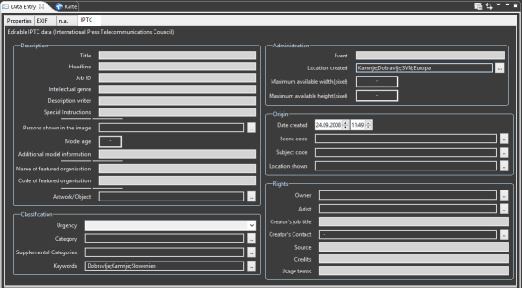

). You can switch to this perspective via the Open Perspective button in the main toolbar.
). You can switch to this perspective via the Open Perspective button in the main toolbar.A more convenient method for entering large amounts of data is offered by the Data entry view. This view organizes the various metadata into logical groups. It allows editing single images as well as multiple images in one step.

The Data entry view is best invoked via the Data Entry Perspective (). You can switch to this perspective via the Open Perspective button in the main toolbar.